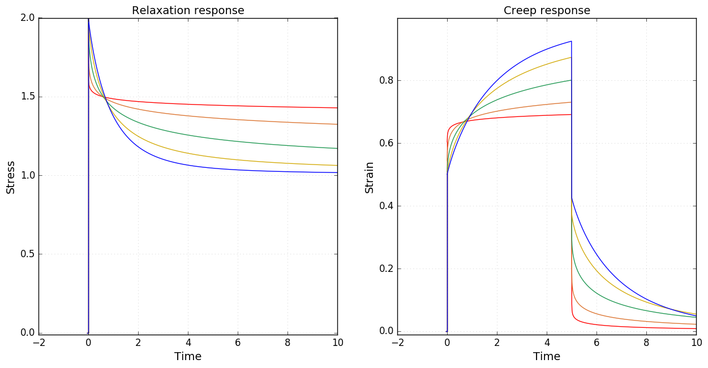
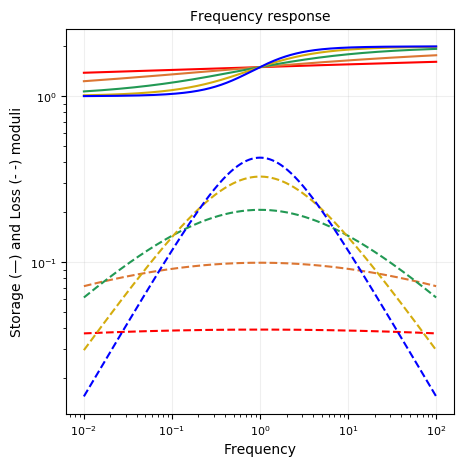
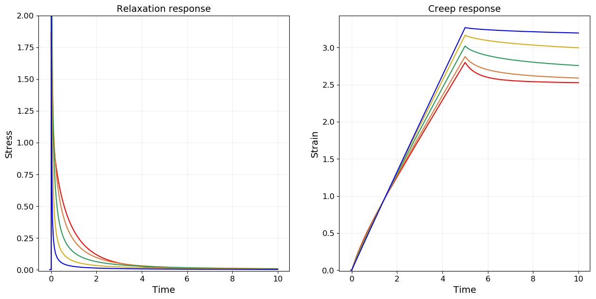
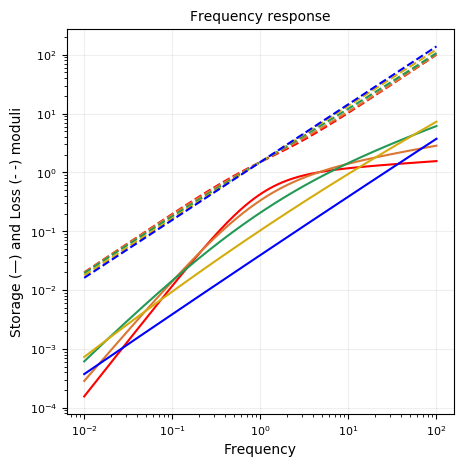
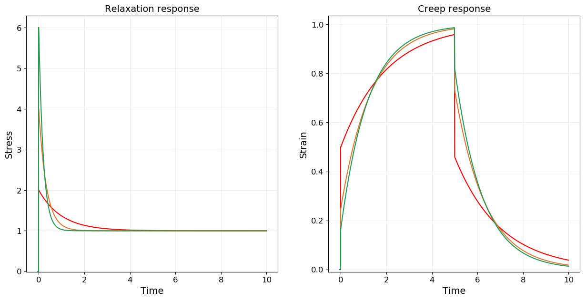
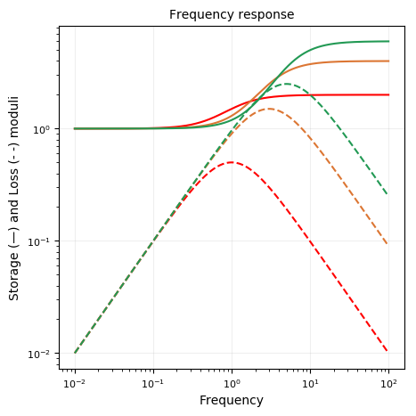
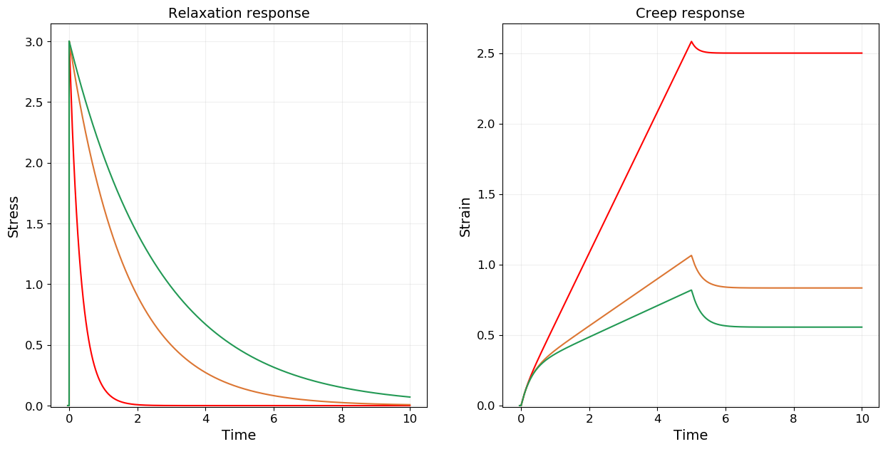
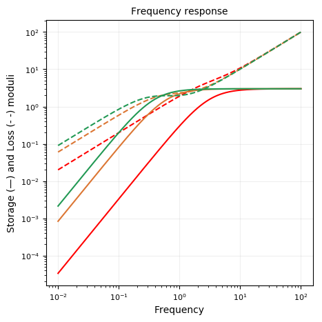
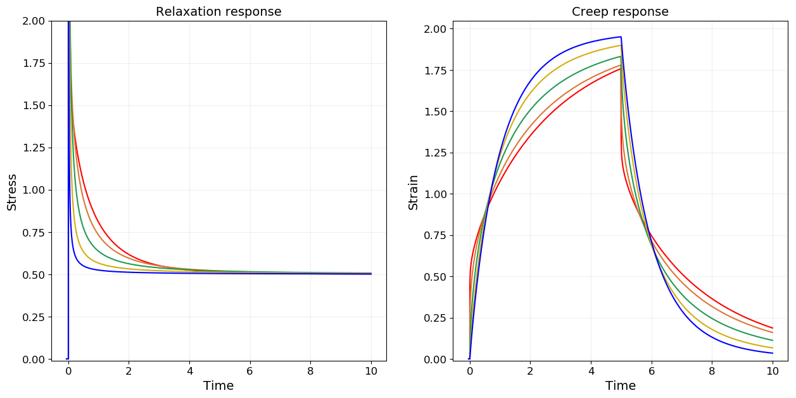
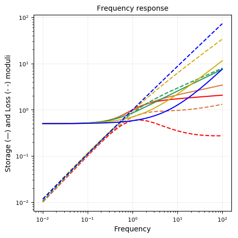

Fractional Zener
using RHEOS
include("plotmodel.jl");Fract_ZenerModel name: frac_zener
Free parameters: cₐ, a, cᵦ, β, cᵧ and γ
______╱╲__________╱╲______
| ╲╱ ╲╱ |
_______| cₐ,a cᵦ, β |_______
| |
|____________╱╲____________|
╲╱
cᵧ, γConstitutive equation
\[\sigma(t) + \frac{c_\alpha}{c_\beta} \frac{d^{\alpha-\beta} \sigma(t)}{dt^{\alpha-\beta}}= c_{\alpha} \frac{d^\alpha \epsilon(t)}{dt^\alpha} + c_\gamma \frac{d^\gamma \epsilon(t)}{dt^\gamma}+ \frac{c_\alpha c_\gamma}{c_\beta}\frac{d^{\alpha+\gamma-\beta} \epsilon(t)}{dt^{\alpha+\gamma-\beta}}\]
Assuming $0 \leq \beta \leq \alpha \leq 1$
Relaxation modulus
\[G(t) = c_\beta t^{-\beta} E_{\alpha-\beta,1-\beta}\left(-\frac{c_\beta}{c_\alpha} t^{\alpha-\beta}\right) + \frac{c_{\gamma} }{\Gamma(1-\gamma)} t^{-\gamma}\]
Creep modulus
\[\tilde{J}(s)= \frac{1}{s}\frac{c_\alpha s^{\alpha}+c_\beta s^{\beta}}{c_\alpha s^\alpha c_\beta s^{\beta} + c_\gamma s^\gamma (c_\alpha s^\alpha+c_\beta s^\beta)}\]
Storage modulus
\[G^{\prime}(\omega) = \frac{\left(c_\beta \omega^\beta\right)^2 \cdot c_\alpha \omega^\alpha \cos(\alpha \frac{\pi}{2}) + \left(c_\alpha \omega^\alpha\right)^2 \cdot c_\beta \omega^\beta \cos(\beta \frac{\pi}{2})}{\left(c_\alpha \omega^\alpha\right)^2+\left(c_\beta \omega^\beta\right)^2+2c_\alpha \omega^\alpha \cdot c_\beta \omega^\beta \cos((\alpha-\beta)\frac{\pi}{2})} + c_\gamma \omega^\gamma \cos\left(\gamma \frac{\pi}{2}\right)\]
Loss modulus
\[G^{\prime\prime}(\omega) = \frac{\left(c_\beta \omega^\beta\right)^2 \cdot c_\alpha \omega^\alpha \sin(\alpha \frac{\pi}{2}) + \left(c_\alpha \omega^\alpha\right)^2 \cdot c_\beta \omega^\beta \sin(\beta \frac{\pi}{2})}{\left(c_\alpha \omega^\alpha\right)^2+\left(c_\beta \omega^\beta\right)^2+2c_\alpha \omega^\alpha \cdot c_\beta \omega^\beta \cos((\alpha-\beta)\frac{\pi}{2})}+ c_\gamma \omega^\gamma \sin\left(\gamma \frac{\pi}{2}\right)\]
Fractional SLS (Zener)
FractSLS_ZenerModel name: fracsls_Zener
Free parameters: cₐ, a, kᵦ and kᵧ
_____╱╲_______╱╲ ╱╲ ╱╲ _____
| ╲╱ ╲╱ ╲╱ ╲╱ |
_______| cₐ,a kᵦ |_______
| |
|__________╱╲ ╱╲ ╱╲ _________|
╲╱ ╲╱ ╲╱
kᵧmodels = Vector{RheoModel}()
# plot moduli for varying α
for alpha in [0.1, 0.25, 0.5, 0.74, 0.9]
push!(models,RheoModel(FractSLS_Zener,(cₐ = 1, a = alpha, kᵦ = 1, kᵧ = 1)))
end
plotmodel(models);

Fractional Jeffreys (Zener)
FractJeffreys_ZenerModel name: fjeff_Zener
Free parameters: ηₐ, cᵦ, β and ηᵧ
___
_________| |_________╱╲________
| _|_| ╲╱ |
_______| ηₐ cᵦ, β |_______
| ___ |
|_______________| |_____________|
_|_|
ηᵧmodels = Vector{RheoModel}()
# plot moduli for varying β
for beta in [0.1, 0.25, 0.5, 0.74, 0.9]
push!(models,RheoModel(FractJeffreys_Zener,(ηₐ = 1, cᵦ = 1, β = beta, ηᵧ = 1)))
end
plotmodel(models, ymaxG = 2.0);

Standard Linear Solid (Zener)
SLS_ZenerModel name: SLS_Zener
Free parameters: η, kᵦ and kᵧ
___
_____| |________╱╲ ╱╲ ╱╲ ___
| _|_| ╲╱ ╲╱ ╲╱ |
_______| η kᵦ |_______
| |
|__________╱╲ ╱╲ ╱╲ _________|
╲╱ ╲╱ ╲╱
kᵧmodels = Vector{RheoModel}()
# plot moduli for varying kᵦ
for k in [1.0, 3.0, 5.0]
push!(models,RheoModel(SLS_Zener,(η = 1, kᵦ = k, kᵧ = 1)))
end
plotmodel(models);

Jeffreys (Zener)
Jeffreys_ZenerModel name: jeffreys_Zener
Free parameters: ηₐ, k and ηᵧ
___
_______| |_______╱╲ ╱╲ ╱╲ ___
| _|_| ╲╱ ╲╱ ╲╱ |
_______| ηₐ k |_______
| ___ |
|_______________| |_____________|
_|_|
ηᵧmodels = Vector{RheoModel}()
# plot moduli for varying ηₐ
for eta in [1.0, 5.0, 8.0]
push!(models,RheoModel(Jeffreys_Zener,(ηₐ = eta, k = 3, ηᵧ = 1)))
end
plotmodel(models);

Fractional Solid
Reference: Bonfanti, A., Fouchard, J., Khalilgharibi, N., Charras, G., & Kabla, A. (2019). A unified rheological model for cells and cellularised materials. BioRxiv
FractSolidModel name: fractsolid
Free parameters: η, cᵦ, β and k
___
_____| |__________╱╲__________
| _|_| ╲╱ |
___ | η cᵦ, β |___
| |
|__________╱╲ ╱╲ ╱╲ ________|
╲╱ ╲╱ ╲╱
kmodels = Vector{RheoModel}()
# plot moduli for varying β
for beta in [0.1, 0.25, 0.5, 0.74, 0.9]
push!(models,RheoModel(FractSolid,(η = 1, cᵦ = 1, β = beta, k = 0.5)))
end
plotmodel(models, ymaxG = 2);
